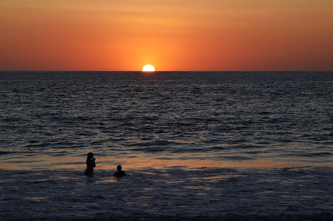
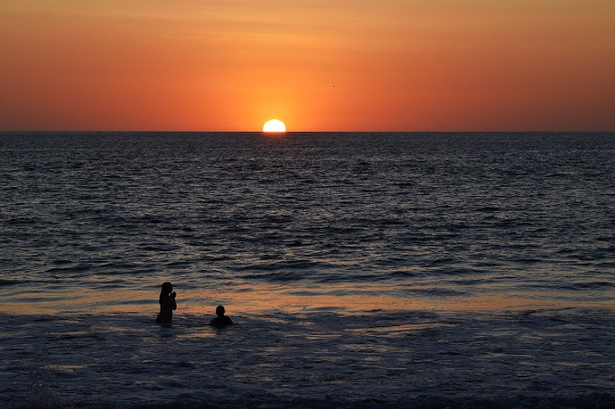
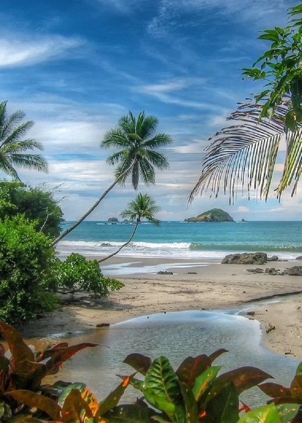
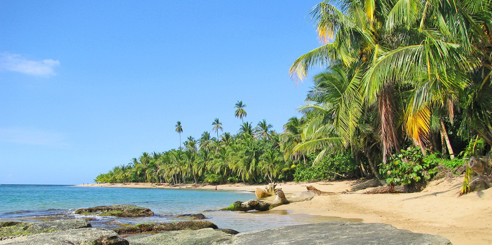
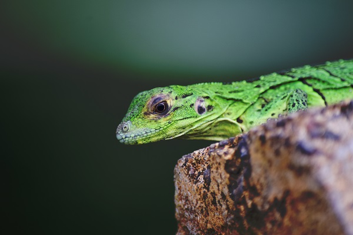
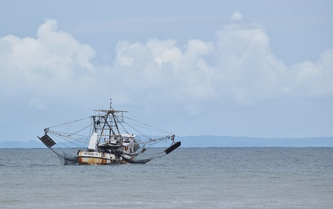
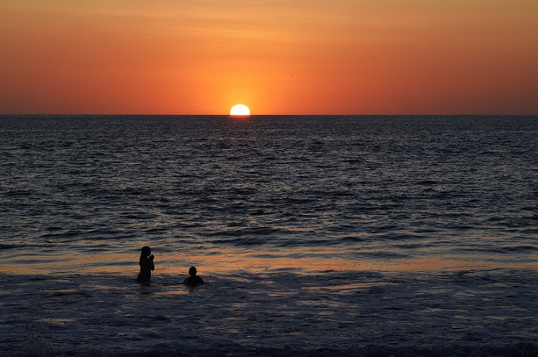

Considerado por muchos como una de las regiones más espectaculares del país, las tierras bajas del norte y la zona del Volcán Arenal son los destinos turísticos más populares de Costa Rica. Antes de diciembre del 2010, el Volcán Arenal era uno de los diez volcanes más activos del mundo y era una vista realmente majestuosa, expulsando rocas y cenizas desde su cumbre diariamente. Hoy en dia no hay erupciones de lava, por el momento, pero todavía se puede ver el humo o ceniza que se arroja fuera de la cima del volcán y disfrutar de alguna de las muchas aguas termales que rodean a este majestuoso volcán activo.
Para los amantes de la naturaleza, la región de Arenal también ofrece numerosas excursiones y rutas de senderismo cerca del volcán donde se pueden ver unas impresionantes cascadas, ríos que brotan, hermosa flora y fauna e incluso cavernas con ríos que fluyen a través de ellos en las Cavernas de Venado. Justo al norte de esta zona se encuentra la Reserva Natural Caño Negro que también es, sin duda una visita obligada. Usted puede organizar un viaje, ya sea desde Nuevo Arenal o Tilaran, que ofrecen todas las excursiones de un día, en el que a bordo de un autobús sera transportado hasta el río, desde donde se dirigira aguas abajo junto con el guía para ver una gran cantidad de animales y aves, incluyendo monos, tucanes, caimanes, y mucho más.
Costa Rica tiene una riqueza en su naturaleza diversa y vida salvaje convirtiéndola en uno de los sitios más bio- diversos del planeta. Bosques lluviosos, manglares pantanosos, bosques nublados, playas, arrecifes corales y una plétora de vida animal y de plantas que hacen de este pequeño país de Latino América un sitio especial si usted es un ávido amante de la naturaleza
Con su abundante colección salvaje de flora y fauna exótica y tropical, Costa Rica es hogar de por lo menos el 5% de la bio-diversidad mundial. Esto significa que el número de vida salvaje por 10.000 sq. km, es de 615. Este hecho demuestra lo espectacular y el esplendor que tiene Costa Rica para ofrecer. Con un total de 1.077.308 hectáreas, Costa Rica tiene un 25% de áreas protegidas, 26 bosques protegidos, 20 parques nacionales, 9 reservas forestales, 8 refugios de vida salvaje, 7 santuarios de vida salvaje y 1 monumento arqueológico nacional.